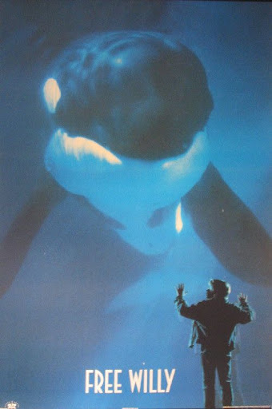
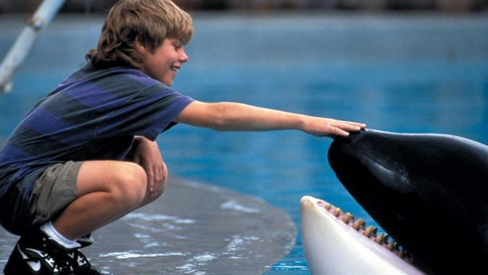

Free Willy 1993, by Simon Wincer
A Legacy of Freedom and Conservation
The orca featured in the 1993 movie Free Willy was a real whale named Keiko, who became an icon for animal rights and the movement to end the captivity of marine mammals. Captured off the coast of Iceland when he was just two years old, Keiko spent over 20 years in various aquariums, where he was kept in small tanks and deprived of the space to swim freely. Despite his circumstances, Keiko became a star after appearing in the popular film.
A Public Outcry and Efforts for Release
Following the movie’s success, a public outcry for Keiko’s release began. In 1996, marine mammal experts launched an ambitious rehabilitation project to prepare Keiko for life in the wild. After being moved to a larger facility in Oregon, Keiko was eventually released into the waters off Iceland in 2002. Though he swam freely, Keiko struggled to integrate with wild orca pods and, sadly, passed away in 2003 due to pneumonia.
Keiko’s Legacy and Impact
Keiko’s story sparked a global conversation about the ethics of keeping orcas and other marine mammals in captivity for entertainment. His journey led to increased pressure on aquariums and marine parks, including SeaWorld, to end orca breeding programs and live shows. Keiko’s legacy lives on as a symbol of the need for better treatment and conservation of marine life, inspiring efforts to protect wild orcas and other endangered species.